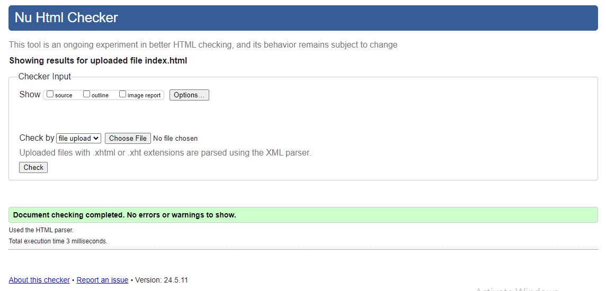
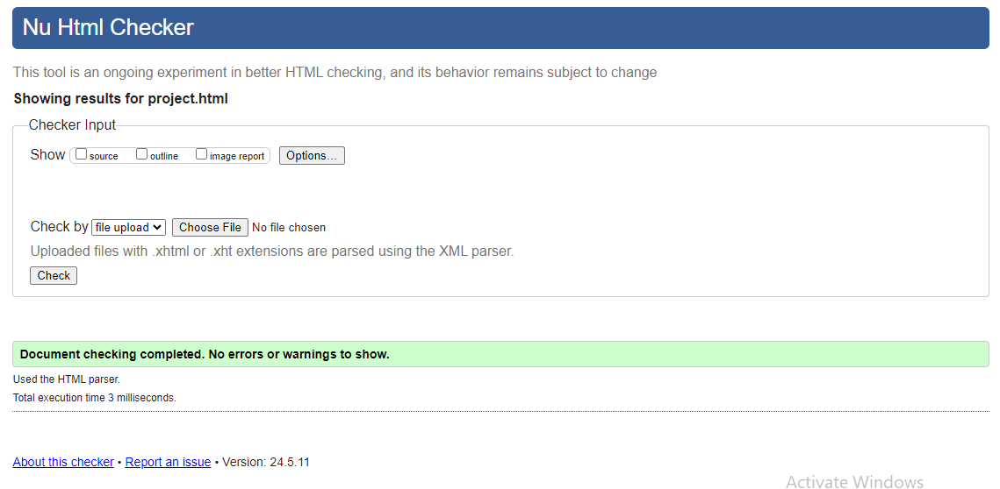
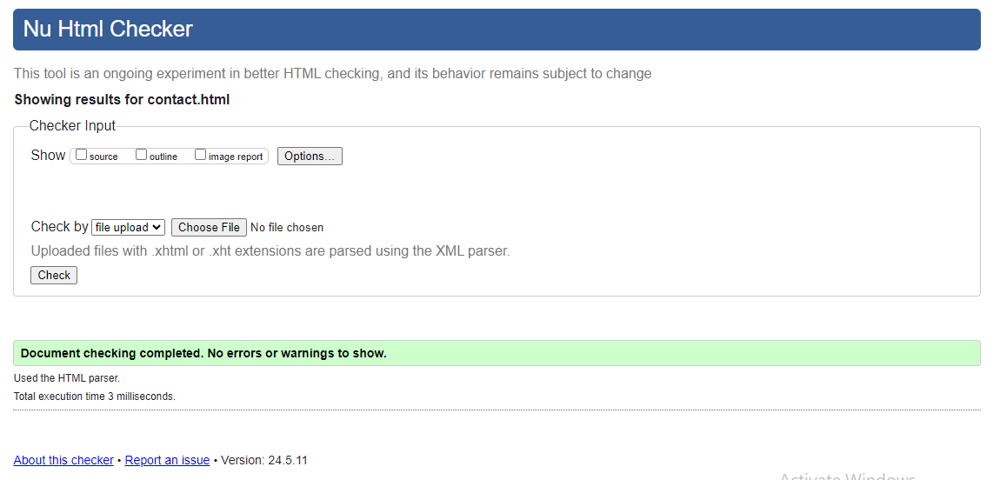
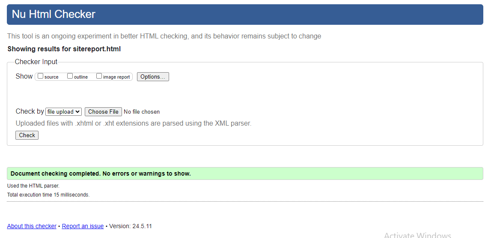
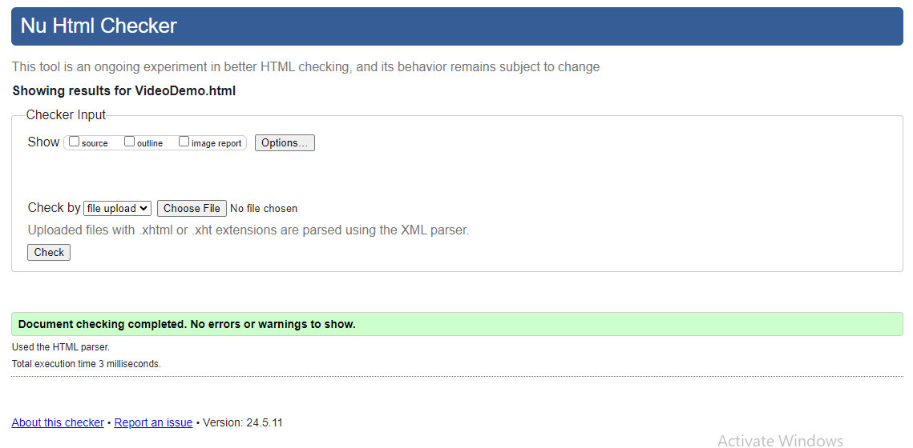

Report
Learning Web Development
The journey of Learning web development was really amazing experience and yet also quite challenging in the early path. I started with the basics of HTML and CSS and making your web page responsive was a different yet rewarding story. It was really amazing how interesting web development can be.
For me understanding the structure of HTML was straightforward, but making the pages look good with CSS was quite struggling in the early development. However, these challenges were crucial learning experiences. Each error taught me something new, and overcoming problems felt like solving a puzzle.
Reflective Discussion of module experience
Through the module, I faced both highs and lows. The structured learning environment helped me graps the foundational concepts efficiently. However, the real learning happened during practical assignments where theoretical knowledge had to be applied. Thoughout the module, it really provided a different perspective, enchancing my understanding of the web development and having your code not work exactly could be bad and frustrating but it provided me consistency and experience that would be motivation for me to keep trying.
Development of the Site Over the Term
Over the term, the website evolved significantly. As I kept on I faced quite challenges regarding the structure and designs for the web pages. Every element was bind with each other and was equally important for every thing. Getting messsed up in a particular element meant your website could break as it should be welly placed and selected.
For the home page navigation bar I choose to to go for flex and learn the properties of flex(Web Design Envato Tuts+, 2024). It was going well until I found out that making it responsive was quite hard and long process. For the body contents I choose a picture regarding the developer which suits the home page background (Download High Quality PNG imags, n.d.).
While making the hamburger icon for the navigation bar I had faced issues regarding the expanding of the icon itself as everything went all right like having the icon appear when a certain resolution is set and making the rest of menu bar to be hidden inside the hamburger icon but while all this went smoothly I couldn't access the icon itself at the end. I had tried changing the click attribute and other things but it didn't change anything. After many attempts I have used javascript for the substitute for it as I was concerned for the project deadline which was nearing soon.
For the project page I was interested in using CSS card property(www.w3schools.com, 1999) as it looked very well for project based page. This time I was using grid layout because it helps a lot in making your website responsive then using flex.
For the contact page I was struggling and confuse for the layout page and designs of it then I came to a simple yet understandable layout as I did need to show case my contact information also which would be my final decision on it
As for other pages I stick with simple design report format which will be use for the report site contents and learning iframe was very fun and easy.
Design Decision and influences
Designing the website involved several key decisions. I choose a simple design to keep the focus on content. I loved the simplecity for light color tone which would be better in any situation and also wanted it in color combination and make it simple and practical. I was inspired by the Green Beach tone(#02AABD → #00CDAC) (www.b3multimedia.ie, 2013) and made the decision to make it the main color for my web pages.
Validation Reports
For the validation report I chose to check the validity of my codes using W3C validation tool.





Conclusion
This project was really helpful and rewarding. From learning basic tags to creating a fully functional and responsive website,it was really fun and yet also challenging project which greatly improved my skills and experience. Having to finish this project was both a hard but also has contributed a lot to my growth as a developer.
References
1. Web Design Envato Tuts+. (2024). How to Build a Responsive Navigation Bar With Flexbox | Envato Tuts+. [online] Available at: https://webdesign.tutsplus.com/how-to-build-a-responsive-navigation-bar-with-flexbox--cms-33535t [Accessed 28 Jun. 2024].
2. Download High Quality PNG imags. (n.d.). Developer Png - Download Free Png Images. [online] Available at: https://pnghq.com/category/developer-png/ [Accessed 29 Jun. 2024].
3. www.w3schools.com. (1999). How To Create Column Cards. [online] Available at: https://www.w3schools.com/howto/howto_css_column_cards.asp[Accessed 2 Jul. 2024].
4. www.b3multimedia.ie. (2013). 25 Beautiful Color Gradients For Your Next Design Project | B3 Multimedia Solutions. [online] Available at: https://www.b3multimedia.ie/beautiful-color-gradients-for-your-next-design-project/[Accessed 4 jul. 2024].